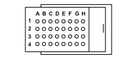

M010C ENGINE MANAGEMENT ECU (ENGINE)
- Path
- Electrical equipment > 3 CONNECTORS > M INTERMITTENT AND TIMED ELECTRONIC DEVICES > M010 ENGINE MANAGEMENT ECU > M010C ENGINE MANAGEMENT ECU (ENGINE)
- Kind
- connector pinout (pin -> wire colour -> other end)
- Applies to
- engines: 2.0 16V; all production periods
- Interactive page
- https://sloeber94.github.io/elrnDB-fDct/en/#/244003469
Applies to: engines: 2.0 16V; all production periods

Wiring | Colour |
|---|---|
GRIGIO (grey) |
Pin | Cable | Destination | |||
|---|---|---|---|---|---|
Sec.. | Colour | Node | Connect. | Pin | |
A2 | 0,75 | NZ (black with violet stripe) | X | 3 | |
1 | |||||
A3 | 0,5 | Z (violet) | 4 | ||
B1 | 0,5 | RG (red with yellow stripe) | 1 | ||
B2 | 0,5 | BL (white with blue stripe) | 2 | ||
B3 | 0,5 | L (blue) | 3 | ||
C1 | 0,5 | LN (blue with black stripe) | 1 | ||
C3 | 0,5 | LR (blue with red stripe) | 3 | ||
D1 | 0,5 | MB (brown with white stripe) | D | ||
D2 | 0,5 | HB (grey with white stripe) | B | ||
D3 | 0,5 | GN (yellow with black stripe) | C | ||
E1 | 0,75 | CN (orange with black stripe) | X | 1 | |
3 | |||||
E3 | 0,5 | HG (grey with yellow stripe) | A | ||
F2 | 0,75 | MN (brown with black stripe) | 1 | ||
F3 | 0,5 | AV (light blue with green stripe) | 12 | ||
G2 | 1,5 | HV (grey with green stripe) | 1 | ||
G3 | 1,5 | H (grey) | 1 | ||
H1 | 1,5 | N (black) | X | H4 | |
L4 | |||||
M4 | |||||
A02 | |||||
2 | |||||
2 | |||||
H2 | 1,5 | B (white) | 1 | ||
H3 | 1,5 | BV (white with green stripe) | 1 | ||
Topics linked from this page (19)
- 50 ENGINE
- B001A JUNCTION UNIT (ENGINE)
- C040 ENGINE EARTH
- D004A FRONT/ENGINE COUPLING (FRONT)
- K017 LAMBDA SENSOR ON CATALYZER
- K046 RPM SENSOR
- K047 TIMING SENSOR
- K048 ABSOLUTE PRESSURE SENSOR
- K056 THROTTLE POSITION SENSOR
- L010 FUEL VAPOUR RECOVERY SOLENOID VALVE
- M010A ENGINE MANAGEMENT ECU (ENGINE)
- M010B ENGINE MANAGEMENT ECU (ENGINE)
- N070A INJECTOR (ENGINE)
- N070B INJECTOR (ENGINE)
- N070C INJECTOR (ENGINE)
- N070D INJECTOR (ENGINE)
- N075 THROTTLE BODY ACTUATOR
- O007A OIL VAPOUR HEATING RESISTANCE (ENGINE)
- O015 THROTTLE CASING HEATING RESISTANCE